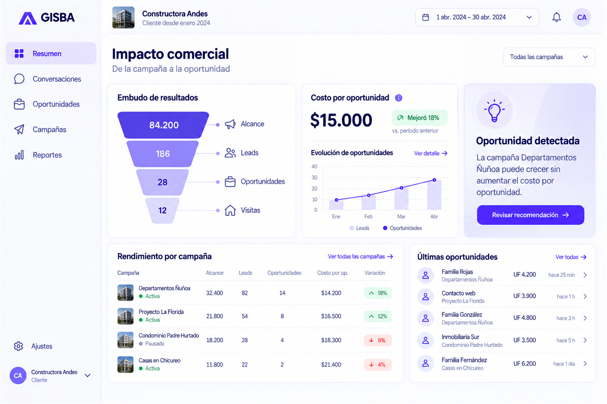
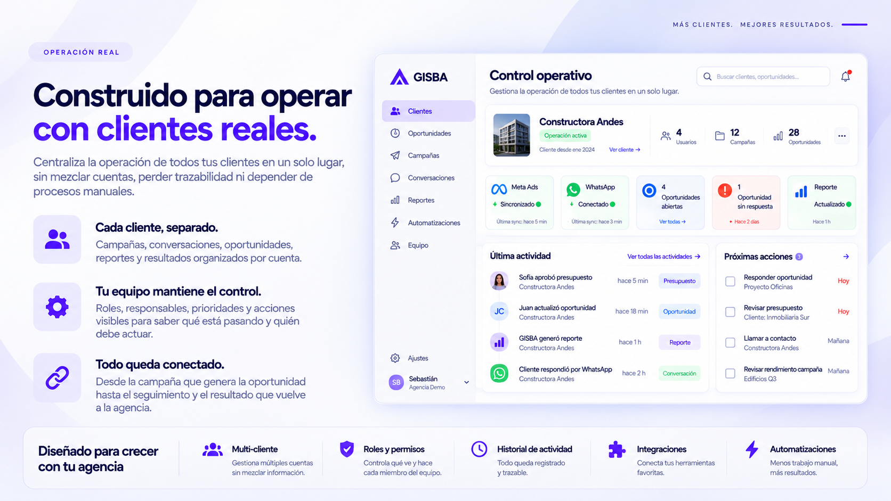

Más cuentas con el mismo equipo
Centraliza clientes, pendientes y prioridades.

Para agencias de marketing
GISBA OS centraliza campañas, conversaciones, oportunidades y resultados de todos tus clientes. La IA detecta qué cuenta necesita atención y ayuda a tu equipo a decidir qué hacer después.
Centraliza clientes, pendientes y prioridades.
La IA identifica qué requiere atención.
Conecta campañas, oportunidades y resultados.

Clientes activos
↑ +12%Requieren atención
↑ +3Campañas en curso
↑ +8%Oportunidades
↑ +25%La forma GISBA
Unimos estrategia, tecnología y ejecución para reducir fricción y convertir datos en decisiones.
Cómo trabajamosCentraliza todos tus clientes, campañas y prioridades en un solo lugar. Detecta alertas, cuentas que necesitan atención y oportunidades antes de que se conviertan en problemas.
Conecta conversaciones, cotizaciones y seguimientos de tus clientes en un mismo flujo. Automatiza tareas repetitivas con WhatsApp, IA y reglas para reducir trabajo manual.
Conecta cada campaña con las oportunidades y resultados que genera. Entiende qué ocurre después de cada lead y demuestra con mayor claridad el valor que entrega tu agencia.
Tu agencia, en otro nivel
Conecta tus herramientas, automatiza procesos y enfócate en hacer crecer a tus clientes.
Cliente aceptó presupuestoSofía Martínez · NOVA Studio
Campaña Meta Ads · $1.200.000
Campañas optimizadasAjustes automáticos aplicados
+32% ↗Reporte listo para clienteGenerado y enviado automáticamente
✓Alerta en tiempo realAnomalía detectada y resuelta
✓Reduce tareas repetitivas.
Toda tu operación en un solo lugar.
Más tiempo para lo que importa.
También mejora la experiencia de tu cliente
GISBA OS no solo ordena la operación de tu agencia. También le da a cada cliente una experiencia más clara, profesional y conectada con sus oportunidades, cotizaciones y resultados.
Más claridadTu cliente entiende qué está pasando sin pedir reportes constantemente.
Más participaciónPuede revisar oportunidades, responder conversaciones y seguir el avance comercial.
Más confianzaTu agencia demuestra con claridad qué pasó desde la campaña hasta el resultado.
Más clientes. Mejores resultados. A largo plazo.

Operación real
Centraliza la operación de todos tus clientes en un solo lugar, sin mezclar cuentas, perder trazabilidad ni depender de procesos manuales.
Cada cliente, separado.Campañas, conversaciones, oportunidades, reportes y resultados organizados por cuenta.
Tu equipo mantiene el control.Roles, responsables, prioridades y acciones visibles para saber qué está pasando y quién debe actuar.
Todo queda conectado.Desde la campaña que genera la oportunidad hasta el seguimiento y el resultado que vuelve a la agencia.

Multi-clienteGestiona múltiples cuentas sin mezclar información.
Roles y permisosControla qué ve y hace cada miembro del equipo.
Historial de actividadTodo queda registrado y trazable.
IntegracionesConecta tus herramientas favoritas.
AutomatizacionesMenos trabajo manual, más resultados.